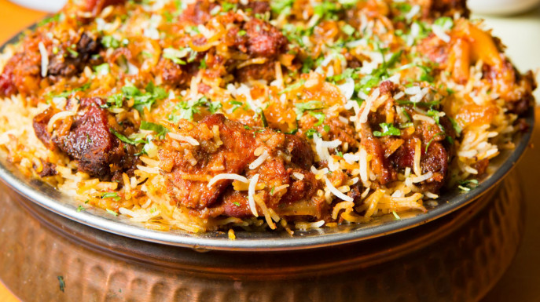

Biriyani

Description
Biryani is a popular and flavorful South Asian dish known for its aromatic and spiced
rice preparation. It typically consists of long-grain basmati rice cooked with a
variety of ingredients such as meat (usually chicken, lamb, or goat), vegetables, or
seafood. The rice is layered with marinated meat or vegetables and infused with a
blend of spices, including cumin, coriander, cardamom, cinnamon, and cloves.
The cooking process often involves sautéing the ingredients, parboiling the rice,
and then layering them in a pot or cooking vessel. Saffron-infused milk or food
coloring is often used to give the rice a vibrant hue. Biryani is cooked on a low
flame, allowing the flavors to meld together and the rice to absorb the rich aromas.
It's typically garnished with fried onions, fresh herbs like mint and cilantro, and
sometimes served with yogurt-based raita or a side salad.
Biryani variations can be found throughout South Asia, each with its own regional
flavors and ingredients. It's a beloved and cherished dish that's known for its
delicious blend of spices and textures, making it a favorite in many parts of the
world.
Ingredients
- Basmati rice: Long-grain rice known for its aromatic qualities.
- Protein (choose one):
- Chicken
- Mutton
- Beef
- Paneer (for vegetarian biryani)
- Fish (for seafood biryani)
- Cooking oil or ghee
- Onions: Sliced and fried until golden brown for garnish and flavor.
- Ginger-garlic paste: A mixture of finely minced ginger and garlic.
- Yogurt: To marinate the protein and add creaminess.
- Biryani masala or a blend of spices: Typically includes cumin,
coriander, cardamom, cinnamon, cloves, and bay leaves.
- Saffron strands: Soaked in warm milk or water for color and aroma.
- Fresh mint leaves: For a refreshing flavor and garnish.
- Green chilies: To add heat if desired.
- Salt: To taste.
- Water or chicken/vegetable broth: For cooking the rice and protein.
- Optional spices and flavorings:
- Star anise
- Mace
- Nutmeg
- Fennel seeds
- Black peppercorns
Steps to Cook Biryani
-
Marinate the Protein:
- Cut the protein (e.g., chicken, mutton) into pieces
- Marinate with:
- Yogurt
- Ginger-garlic paste
- Biryani masala
- Salt
- Optional: Green chilies
- Let it marinate for at least 30 minutes or longer for better flavor.
-
Prepare the Rice:
- Wash and soak the basmati rice for 30 minutes, then drain it.
- In a large pot, bring water or broth to a boil
- Parboil the rice until it's 70-80% cooked (it should still have a slight
bite)
- Drain and set aside.
-
Fry Onions:
- In a separate pan, heat oil or ghee
- Fry thinly sliced onions until they turn golden brown and crispy
- Remove them and set aside for garnish.
-
Layering:
- In a heavy-bottomed pot or a biryani vessel, start by adding a layer of
the marinated protein
- Follow with a layer of partially cooked rice
- Sprinkle saffron-soaked milk, chopped mint leaves, and cilantro leaves
- Repeat the layering process until all the rice and protein are used up
- Top with the fried onions.
-
Dum Cooking:
- Seal the pot with a tight-fitting lid or use dough to seal the edges,
ensuring no steam can escape
- Cook on low heat (simmer) for about 20-30 minutes. This is called "dum
cooking" and allows the flavors to meld together.
-
Serve:
- Once the biryani is done, remove it from heat and let it rest for a
few minutes
- Gently fluff the layers with a fork, mixing them if desired
- Garnish with more fresh herbs, if desired, and serve hot.